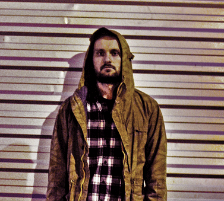

Mówią lepiej późno niż wcale, lepiej zrobić coś i nie żałować później, że się nie zrobiło... (czy jakoś tak). QDEE i Dwaylocos mają zaszczyt zaprezentować pierwszy solowy krążek kudłatego - mc pochodzącego z Ostrowa Wlkp. Wcześniej można było usłyszeć jego głos na kilku produkcjach składu tworzonego z Jaśkiem o nazwie Stonedhigh. Latali, pierdolili, że talenty, że Eldo się jarał maczetą przez dżunglę - dupa nikt nie zadzwonił. Potem była ogarka, rozjazdy, duperele ale zawsze tlił się w nas ten ogień bo jak zwykłem twierdzić czy robisz kupę czy muzykę - rób to do końca. I tak, płyta "To nie każdy" to swego rodzaju przekrój twórczości a niektóre teksty sięgają mniej więcej 2014 roku. Za produkcję muzyczną odpowiada kopiący w dynke jak tequilka duet producencki Dwaylocos. Z pozdrowieniami dla rodziny i najbliższych przyjaciół oraz wszystkich, z którymi skrzyżowały się moje życiowe drogi. Jeśli kochasz hiphop zapraszam do odsłuchu w nadziei, że znajdziesz coś wartego zapamiętania. W innym wypadku rób jak uważasz - I don't care. Peace!
--> TRACKLISTA <--